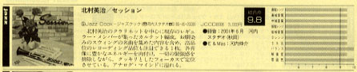
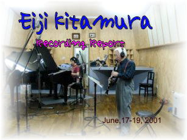
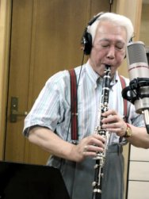
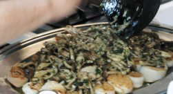
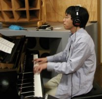
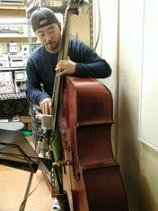
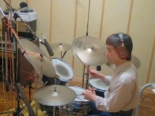
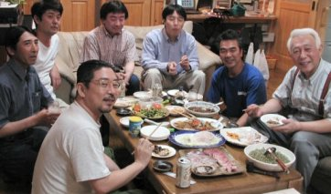
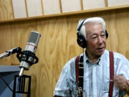
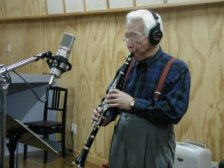

2001.06.17–19 河内スタヂオ録音
Session
北村英治カルテット北村英治 (cl) / 高浜和英 (p) / 小林真人 (b) / 八城邦義 (ds)
About the Album
作品紹介
セッション
楽しい仲間が集まっておなじみの曲を演奏
北村英治(cl) 高浜和英(ｐ)
小林真人(b) 八城邦義(ds)
2001年 11月3日発売
製造元：（株）アルメディオ 発売元：JAZZ COOK ￥３，０００
（CD代、税込み）
購入先はこちら>>>北村英治HP
1. マイ・ギャル・サル 2. 明るい表通りで 3. 何時か何処かで 4. ジャスト ワン オブ ソーズ シングス 5. ♪マチルダ (北村英治オリジナル338ｋｂ )
6. ブルーなレディに赤いバラを 7. スマイルズ 8. アイ ハドゥント エニワン ティル ユー 9. ランニング ワイルド 10. その手は無いよ
11. ボディ アンド ソウル 12. そして天使は歌う 13. レッツ ダンス 14. メモリー オブ ユー 15. シング シング シング
理屈抜きで楽しめる音楽、そして心の温まる演奏、決してイージーに流れてしまうものではなく、中味のあるもの、これは私の理想でもあります。今回の「セッション」は、そんなものにしたいと思い、曲名もスウィングで演奏されるスタンダードを中心に取り上げてみました。中にはオーケストラでなければと云うものもありますが、無理を承知でやってみました。結構面白いものです。それなりにスリルがあるし表現したかった感じが出たと思います。
コンビネーションがとれないと。どう仕様も無くなってしまうのですが、その点、この仲間は気の合った連中なのでうまく纏まりました。少しでも多くの人達に聞いてもらい、楽しんでいただけたら幸いです。
尚、ジャケットの絵は静物画にして、演奏する時と同じ気持ちで描いて見ました。
北村英治

*stereo 12月号
で今月の優秀録音9.8点
北村英治のクラリネットを中心に現存のレギュラー・メンバーが集まったカルテット編成。お馴染みのスイングの名曲を集めた内容を含め、高品位のレコーディング品位も注目できる1枚。各音像に豊かなエネルギーを肉付け、一切の緊張感を排除しながら、クッキリとしたフォーカスで定位させている。アナログ・マインドに溢れる。（ステレオ12月号）
Recording Report
レコーディングレポート
北村英治カルテット
「セッション」 「サンタクラリネット（クリスマスアルバム）」レコーディング

前回の「Delivery」 の出来を大変気に入ってくださった北村さんから
「６月にまたレコーディングしたいのだけどよろしくね」との電話。
,DeliveryはSwing Journal誌やStereo誌で好録音との評価をいただいた後だけに、ちょっとプレッシャーを感じてしまった。
先回はたまたまうまくいったのかも知れないし・・・。
でも生の音がめちゃくちゃいい北村さんのカルテットなので、「多分私は何にもしなくてもいい音で録れちゃうだろう」、などとノー天気な考えで「いいですよ」と言ってしまった。
ドラムの屋代邦義は何回か録音したことがあり友達なのでやりやすいだろう、何よりも彼のブラシの音は大好きなのだ。
6 /17 Ana 873便にて秋田到着 
空港 にいつも手伝ってくれる田中君と迎えに行き,大潟村に着くやいなや、もうやる気満々の北村さん。
「あのー やる前にホテルのチェックインをされたほうが・・・」
「あっ、そうだね」
とりあえずホテルのチェックインをすませ、八城邦義のドラムセッティングが終わるとすぐにサウンドチェック。

プレイバックを聴いて「あー、いいね！じゃあ、よろしくね」
My Gal Salをレコーディング「OK！じゃあ次いこーか！」 あれー、北村さんプレイバック聴かなくていいんですか？と言うヒマもなく次々に演奏をされていく、音は、もうまかせたね、という事だろう。
ベースの小林さんは高い方の２弦がガット弦で昔のチェンバースみたいなサウンドを目指すベーシスト。ぐいぐいとプッシュする彼のリズムに圧倒される。
ピアノの高浜さんはテディウイルソン風のかろやかなサウンドだ。今回は聴けなかったが彼の歌はめちゃくちゃうまい。
さすがに何１００回もレコーディングの経験のある北村さん。しかもダイレクトカッティング（これはレコード片面分一発録りで最後の一曲でも間違えたら最初からやり直しのものすごい録音法なのだ）のレコードも沢山出してるだけあって、ほとんどが２Takeくらいで進んで行き、７時を過ぎたら
「さっ、食事しよっか」
あれ、飯食ったらまたやるんですよね、と言ったら
「今日はもう終わり！」
短時間ですごい集中力にまたびっくり。
先回のレコーディングの時にも北村さんの中華をごちそうになったが今回も色々作って下さるとのこと、八角やハーブなど見た事もないような材料を自分で用意してこられ手際よく作って下さった。
さっそくいただく、う・・うまい！中華といっても普段私が食べてるようなエビチリとか酢豚とかじゃなく食べた事のないようなお洒落な料理を作ってしまうのだ。

鯛とホタテのオリーブ油焼きニンニク、ハーブ風味
詳しい作り方はこちらを見てね！http://eijikitamura.com/cooking.html
やはりこの人は何をやっても一流なのだと感心してしまった。



6/18（月）さわやかなよい天気
１８日お昼の１２時過ぎから昨日の続きの録音を始める今日も順調に進んでいく。
次は？とお得意のSing Sing Sing八城邦義のバスタムがうなる。
このバランスをうまくおさめたらきっとすごいTakeになるに違いない！
いったい北村さんはこの曲をCDの何番目に入れるつもりだろうと思ってしまった。
５時前に最後のRunning Wildを録りSwing編の録音終了！
「じゃあ、今度はクリスマスソングやろーか」、なんと３日で２枚分のCDを録ってしまうおつもりだ！
こんどは雰囲気ががらっと変わってクリスマスソング、オンパレード！ディック ザ ホールから始まりWhite Christmas まで７曲取り終え７時過ぎ、「さっ、めしにしよか」の一声で今日の録音は終了！
晩飯は北村さんの手料理に私の友達の堤君が八森まで行って買ってきてくれた しま鯛 を私がさばき、またパーティーに、大いに盛り上がった。

6/19レコーディング最終日 薄曇り 小雨


さあ今日は最終日だ！
今まで順調にきてるので、みんな余裕の表情でリラックスしている。
Let’s it snowから始まりWinter wonder landでクリスマスソング録音終了！
「まだ時間もあるしSwing編のなんかやってみよか」でボディアンドソウルとスリップドディスクを録り終え、８時過ぎに「もう充分でしょう、終了！」で今回のレコーディングは終了！
お疲れさまでした。
北村英治ホームページ
http://www.eijikitamura.com